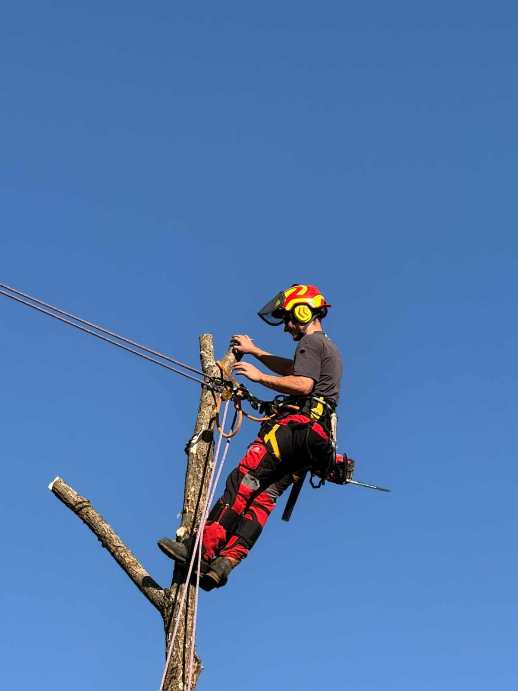
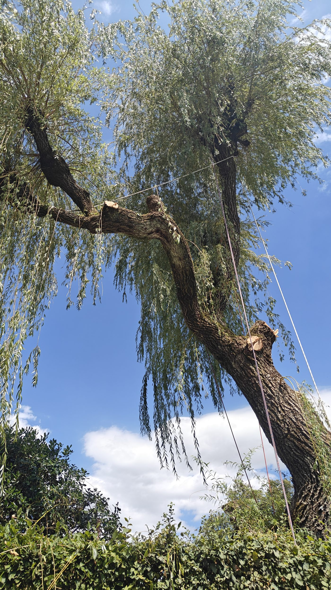

Baumfällung in aller Sicherheit, auch auf engem Raum
Ein gefährlicher, toter, kranker oder dem Haus zu naher Baum? Ein professioneller Baumkletterer fällt ihn oder trägt ihn Stück für Stück ab, schont dabei Ihr Eigentum und hinterlässt das Gelände sauber.
Wir kommunizieren gerne auf Deutsch per E-Mail und Kontaktformular. Telefonisch beraten wir Sie auf Französisch.
- Gratis Offerte, unverbindlich
- Rascher Einsatz im Notfall
- Klettern, Hebebühne, Kran oder Helikopter je nach Fall
- Holz abtransportiert, Gelände gereinigt
Gratis Offerte für die Fällung
Beschreiben Sie den Baum und seinen Standort. Wir beurteilen ihn vor Ort, unverbindlich.
Die richtige Technik für jede Situation
Ein freistehender Baum auf einer Wiese wird nicht wie eine Tanne direkt an einer Fassade gefällt. Wir wählen die Methode, die zu Ihrem Gelände, Ihren Gebäuden und Ihren Nachbarn passt.
Klassische Fällung
Wo der Platz es erlaubt, wird der Baum in einem Stück gefällt, mit kontrollierter Fallrichtung. Die schnellste und günstigste Lösung.
Stückweises Abtragen
Der Kletterer steigt in den Baum und trägt ihn Ast für Ast, dann Stammstück für Stammstück ab. Geeignet im Garten, nahe an Häusern oder Stromleitungen.
Abtragen mit Abseiltechnik
Jedes Stück wird angeseilt und mit einem Bremssystem sanft abgelassen. Nichts berührt unkontrolliert den Boden: Dächer, Gewächshäuser und Beete bleiben geschont.
Hebebühne, Kran und Spezialmittel
Reicht das Klettern nicht aus, arbeiten wir mit Hebebühne oder lassen die Teile per Kran heben. In seltenen Fällen kann ein Helikopter eingesetzt werden. Wir organisieren die gesamte Logistik.
Stockfräsen
Nach der Fällung wird der Wurzelstock unter das Bodenniveau gefräst. Sie können neu pflanzen, Rasen säen oder bauen, ohne Hindernis.
Abtransport und Verwertung des Holzes
Äste gehäckselt, Brennholz für Ihre Heizung oder abtransportiert. Das Gelände wird sauber übergeben, Sie entscheiden.
Manche Bäume müssen gefällt werden. Wir beraten Sie von Fall zu Fall.
Fällen ist nicht unsere erste Wahl: kann ein Schnitt oder eine Kronensicherung den Baum retten, schlagen wir Ihnen das vor. In gewissen Fällen ist die Fällung jedoch die einzige vernünftige Option.
Gefährlicher Baum
Gerissener Stamm, angehobene Wurzeln, Neigung zum Haus oder zur Strasse: das Risiko eines Umsturzes ist real, vor allem bei starkem Wind.
Toter oder kranker Baum
Pilze am Stammfuss, sich lösende Rinde, dürre Krone: ein absterbender Baum wird brüchig und unberechenbar.
Zu nahe an Gebäuden
Wurzeln, die Platten anheben, Äste auf dem Dach, dauerhafter Schatten: der Baum hat dort, wo er gewachsen ist, keinen Platz mehr.
Bauprojekt
Anbau, Pool, neue Zufahrt: wir räumen die Fläche sauber frei, Wurzelstock inklusive, bevor die Arbeiten beginnen.

Eine saubere Fällung ist zuerst eine gut vorbereitete Fällung
Die Sicherheit von Personen und Eigentum hängt von der Vorbereitung ab. Jeder Einsatz wird geplant, bevor die Motorsäge läuft.
- Besichtigung und Beurteilung vor OrtWir messen den Baum, erfassen Hindernisse, Zugänge und Ankerpunkte und wählen dann Technik und Mittel: Klettern, Hebebühne, Kran oder ausnahmsweise Helikopter.
- Gesicherter Bereich während der ArbeitenAbgesperrter Perimeter, Schutz empfindlicher Flächen, Absprache mit Ihnen und bei Bedarf mit den Nachbarn.
- Kontrolliertes Ablassen der TeileBeim Abtragen fällt nichts zufällig: jedes Stück wird bis zum Boden geführt oder gebremst.
- Sauber übergebenes GeländeHolz abtransportiert oder zugeschnitten, Äste gehäckselt, Sägemehl aufgenommen. Sie erhalten Ihren Garten zurück, ohne die Arbeit.
Vier Schritte, vom ersten Kontakt bis zum sauberen Gelände
Sie kontaktieren uns
Beschreiben Sie den Baum in wenigen Worten, gerne auf Deutsch über das Formular. Bei akuter Gefahr rufen Sie uns direkt an (Französisch).
Besichtigung und Diagnose
Wir beurteilen den Baum und sein Umfeld und beraten Sie zur Methode und zu einer allfälligen Bewilligung der Gemeinde.
Klare, kostenlose Offerte
Eine schriftliche Offerte auf Deutsch, mit oder ohne Stockfräsen und Holzabtransport.
Fällung und Reinigung
Einsatz am vereinbarten Termin, in aller Sicherheit. Das Gelände wird vor unserer Abfahrt gereinigt.
Unsere Fällungen und Abtragungen




Jura, Neuenburg und Bern
Von Courgenay in der Ajoie aus sind wir für Privatpersonen, Unternehmen und Gemeinden in einem grossen Teil der Westschweiz und im Kanton Bern tätig.
Kanton Jura
- Pruntrut (Porrentruy)
- Delsberg (Delémont)
- Courgenay
- Alle
- Bassecourt
- Courrendlin
- Moutier
- Saignelégier
- Le Noirmont
- ganze Ajoie
Kanton Neuenburg
- Neuenburg (Neuchâtel)
- La Chaux-de-Fonds
- Le Locle
- Val-de-Ruz
- Val-de-Travers
- Boudry
- Seeufer
Bern
- Biel/Bienne
- Tavannes
- Saint-Imier
- Tramelan
- Reconvilier
- Neuenstadt (La Neuveville)
Was unsere Kunden uns fragen
Sprechen Sie Deutsch?
Ja, schriftlich. Wir beantworten Ihre Anfragen gerne auf Deutsch per E-Mail und Kontaktformular, und die Offerte erhalten Sie ebenfalls auf Deutsch. Telefonisch beraten wir Sie auf Französisch. Am einfachsten beschreiben Sie uns Ihren Baum über das Formular, wir melden uns schriftlich zurück.
Braucht es eine Bewilligung, um einen Baum zu fällen?
In vielen Gemeinden im Jura, in Neuenburg und Bern kann die Fällung eines Baums bewilligungspflichtig sein, je nach Art, Grösse oder Standort (Schutzzone, Allee, markanter Baum). Wir erklären Ihnen das Vorgehen bei Ihrer Gemeinde und können die nötigen technischen Angaben liefern.
Was kostet eine Baumfällung?
Der Preis hängt von Höhe und Durchmesser des Baums, seiner Zugänglichkeit, der nötigen Technik (direkte Fällung, Abtragen, Abseilen, Kran) und dem Holzabtransport ab. Ein Abtragen auf engem Raum braucht mehr Zeit als eine Fällung im offenen Feld. Nach der Besichtigung erstellen wir eine genaue, kostenlose Offerte.
Können Sie einen Baum direkt an meinem Haus fällen?
Ja, genau das ist der Kern unseres Berufs. Durch Abtragen am Seil und Abseiltechnik wird jedes Stück kontrolliert abgelassen, ohne Dach, Fassade oder Umgebung zu berühren.
Muss mein Baum wirklich gefällt werden?
Nicht unbedingt. Bei der Besichtigung prüfen wir den Baum sorgfältig. Reicht ein Sicherheitsschnitt, eine Entlastung oder eine Kronensicherung, um ihn ohne Risiko zu erhalten, schlagen wir Ihnen das zuerst vor.
Was machen Sie mit dem Holz und dem Wurzelstock?
Je nach Offerte wird das Holz als Brennholz für Ihre Heizung zugeschnitten, gehäckselt oder abtransportiert. Der Wurzelstock kann belassen, bodeneben abgesägt oder gefräst werden, damit Sie neu pflanzen oder Rasen ansäen können.
Kommen Sie nach einem Sturm im Notfall?
Ja. Ein Baum auf dem Dach, ein gebrochener Ast, der abzustürzen droht, oder ein entwurzelter Baum: kontaktieren Sie uns, wir sichern die Lage so rasch wie möglich. Bei akuter Gefahr rufen Sie bitte direkt an (auf Französisch).
Ein Baum macht Ihnen Sorgen? Lassen Sie ihn gratis beurteilen.
Besichtigung und Offerte gratis und unverbindlich. Antwort auf Deutsch per E-Mail, bei akuter Gefahr telefonisch auf Französisch.